Recherche de prospects : la nouvelle version, dans le logiciel
Ce ne sont pas des dessins : ce sont des captures du vrai logiciel, en local, pendant de vraies recherches (paysagistes, garages, électriciens en France). Les leads attendent ta validation dans « Mes prospects », la recherche se lance depuis une page sur le modèle du tunnel d'automatisation, et elle se suit depuis n'importe quelle page.
1. Lancer une recherche
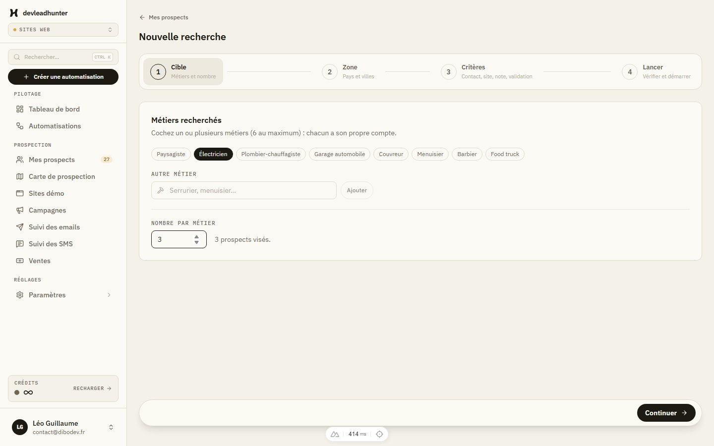
Page « Nouvelle recherche », sur le modèle du tunnel d'automatisation. Étape 1 : les métiers et le nombre.
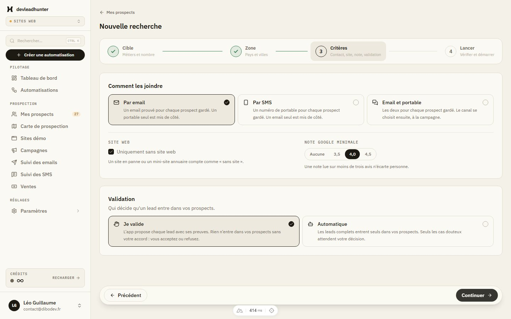
Étape 3 : comment les joindre, sans site web, note Google, et la validation (« Je valide » ou « Automatique »).
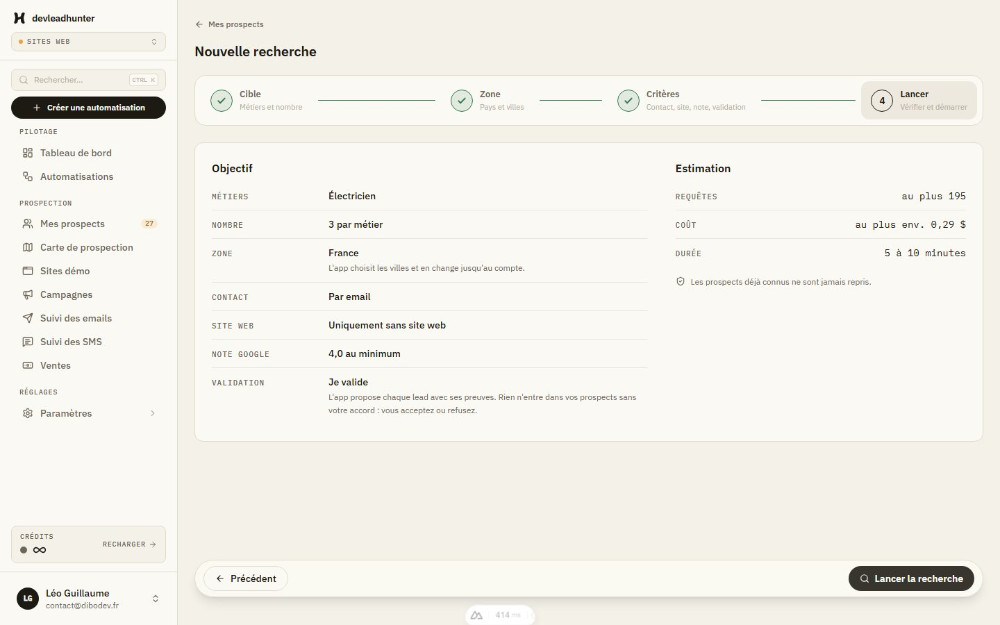
Étape 4 : l'objectif en clair, les requêtes et le coût au plus, la durée.
2. Suivre la recherche, depuis n'importe quelle page
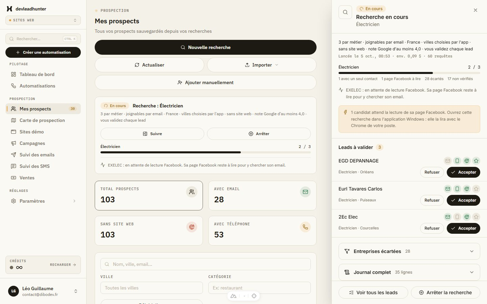
Après le lancement : Mes prospects, onglet « À valider », et le volet « Recherche en cours » à droite, avec les leads qui arrivent (Accepter / Refuser).
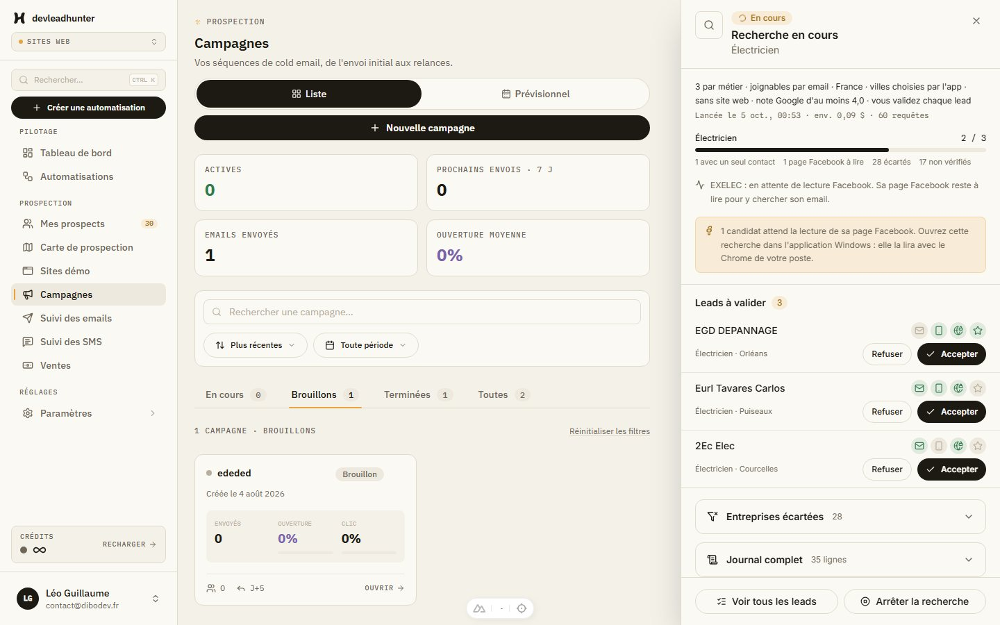
Le volet reste ouvert quand on va sur une autre page (ici Campagnes).
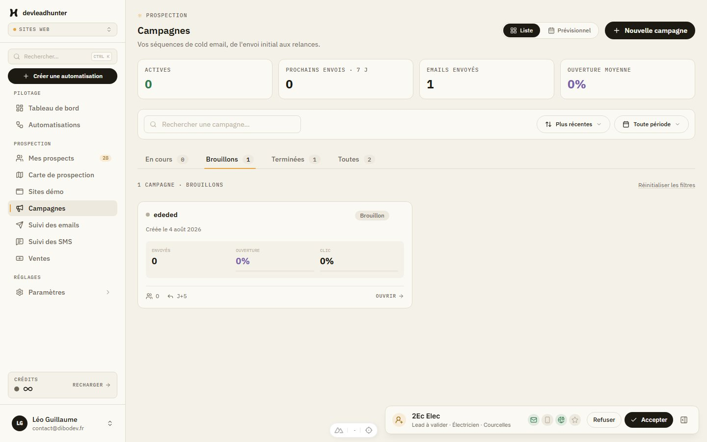
Volet fermé : le compteur sur « Mes prospects » dans le menu, et une notification en bas pour chaque nouveau lead, avec Refuser / Accepter.
3. Trier les leads dans Mes prospects
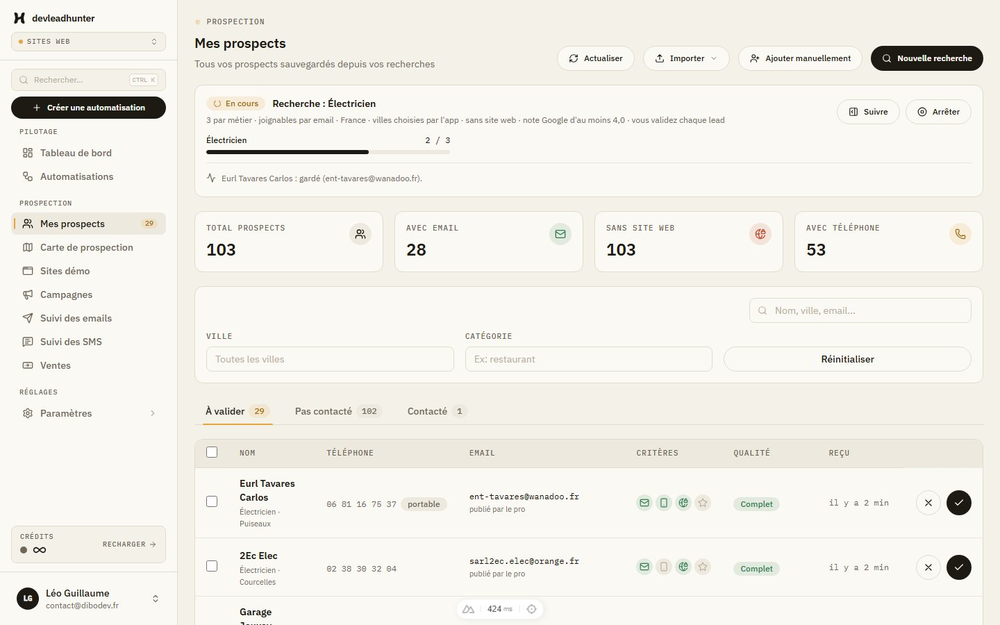
Onglet « À valider » : le bandeau de la recherche en cours, puis le tableau du logiciel. Critères vérifiés (email, portable, pas de site, note), qualité, et les deux boutons au bout de la ligne.
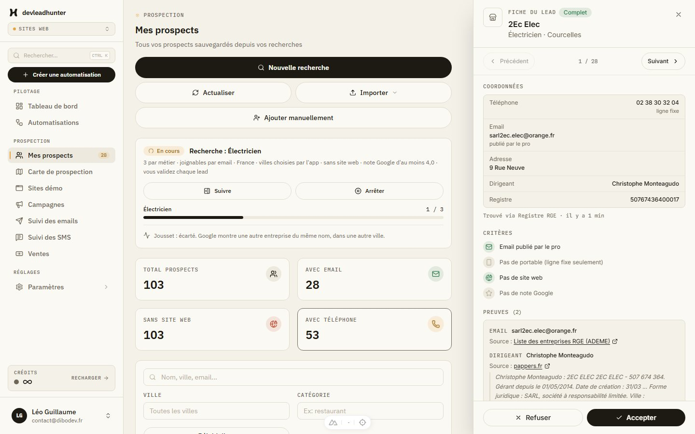
Clic sur un lead : sa fiche avec les coordonnées, le dirigeant, les critères, les preuves et leurs sources. Après une décision, la fiche passe au lead suivant.
4. Thème sombre et téléphone
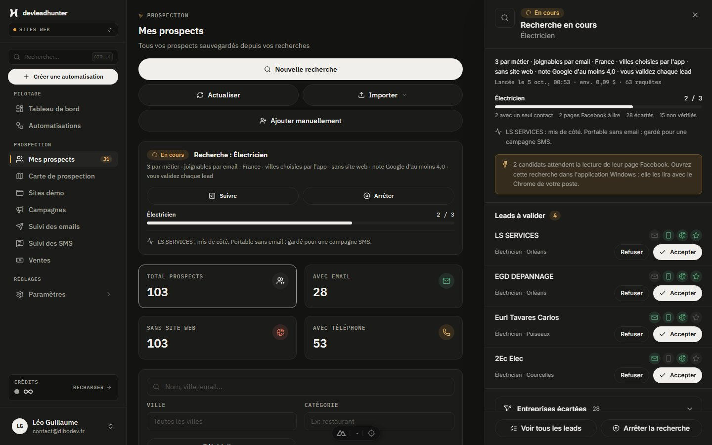
Thème sombre.
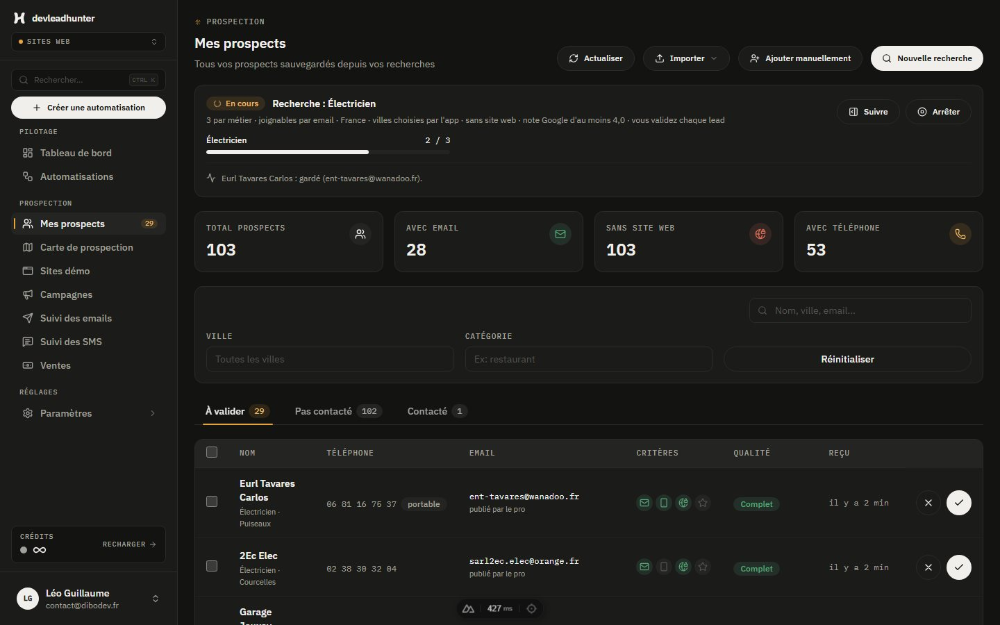
Onglet « À valider », thème sombre.
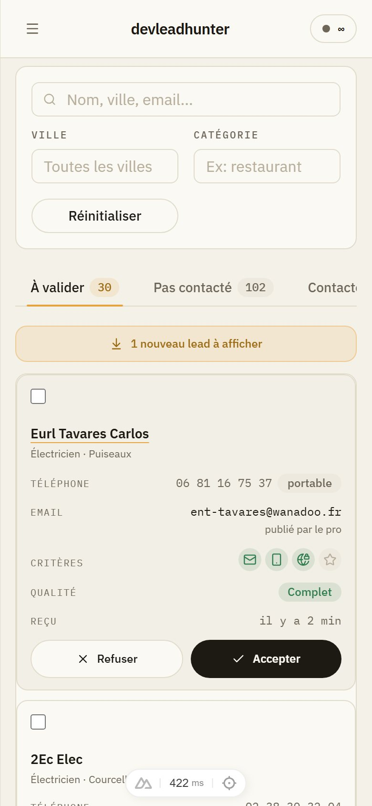
Sur téléphone : les lignes deviennent des cartes, boutons au doigt.